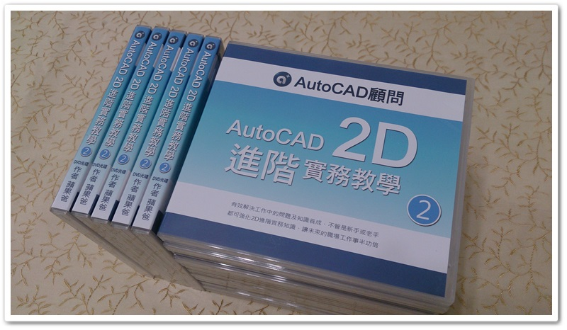
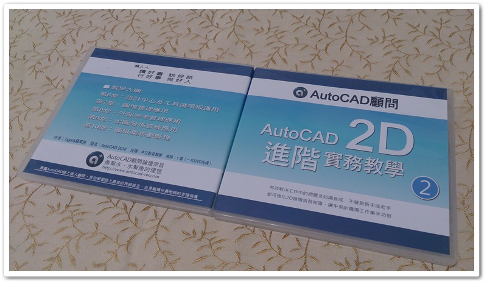
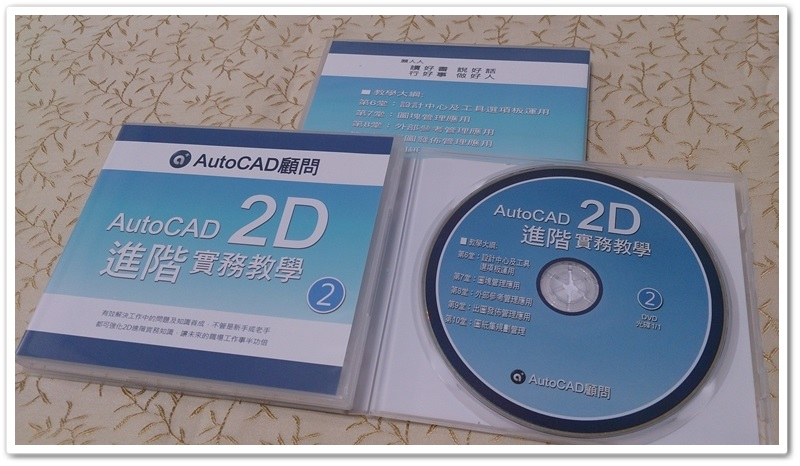

大家好：
AutoCAD 2D函授教學光碟-進階篇2 已經到貨囉～
今天開始寄送作業！
請把握現在進行的「進階篇2-預購優惠」喔～



論壇之前推出「2D函授教學光碟- 進階篇-1」課程，現在「2D函授教學光碟- 進階篇-2」來囉～
只要您有使用過AutoCAD 2D的相關經驗，就可以透過教學快速提升職場上工作效率。而且不管您的身份是「學生」，還是已經進入職場的「社會人士」都適合喔！
☆☆☆教授軟體為AutoCAD2010版本，使用2009至2022版本也可以（介面一樣），因為教授的指令功能都是通用的，內含教學「DWG範例」及「筆記重點整理」，這一點請大家放心。
第6堂：設計中心及工具選項板運用
第7堂：圖塊管理應用
第8堂：外部參考管理應用
第9堂：出圖發佈管理應用
第10堂：圖紙集規劃管理
👉 (點我選購光碟課程) 👈 👉 (點我選購線上課程) 👈
👇第6堂～第10堂請參考 AutoCAD 2D進階篇-2👇
光碟內容教授如何有效的運用預設「內建指令功能」，以及搭配「cui自訂操作」及「lsp程式掛入使用」，讓您的AutoCAD功力更上一層樓。
▼函授教學主題：AutoCAD 2D進階實務研討-函授教學光碟
介紹：有效解決工作中的問題及知識養成，不管是新手或老手都可強化2D基礎實務知識，讓未來的職場工作事半功倍。
作者：Tiger&蘋果爸
版本：AutoCAD 2010
光碟：中文影音教學（僅適用微軟作業系統）
規格：1 套（一片DVD光碟），光碟共計有5堂課，每堂課平均約1小時40分，附有DWG範例供操作練習，還有相關教學文件筆記。
影片：光碟內附CadPlayer播放程式
售價：NT2200元
出版日期： 2016年5月中旬
https://autocad-tw.1shop.tw/0cmnys
https://autocad-tw.1shop.tw/fwmimx
https://www.autocad-tw.com/t20022-topic
第6堂：設計中心及工具選項板運用

第7堂：圖塊管理應用


第8堂：外部參考管理應用

第9堂：出圖發佈管理應用

第10堂：圖紙集規劃管理
以下提供AutoCAD函授教學範例影片展示，給會員朋友參考依據，有任何建議也請您不吝指教！
https://app.box.com/s/v5puwnd8f0vtzow6gbts